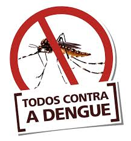

MAIS SOBRE A DENGUE
A dengue é uma doença viral transmitida pela picada do mosquito Aedes aegypti. É uma preocupação global de saúde, afetando milhões de pessoas todos os anos. A doença apresenta diversos sintomas, que variam desde febre alta, dores de cabeça e musculares, até complicações mais graves, como hemorragias e problemas no sistema circulatório. A prevenção da dengue é fundamental para controlar a disseminação do vírus. Medidas simples, como eliminar recipientes que acumulem água parada, usar repelentes e telas de proteção nas janelas, são eficazes na redução dos casos. Além disso, é importante conscientizar a população sobre os sintomas e procurar assistência médica ao apresentá-los, para um diagnóstico precoce e tratamento adequado. O combate à dengue envolve a participação de toda a sociedade, pois a proliferação do mosquito ocorre principalmente em áreas urbanas. É necessário o engajamento de governos, comunidades e indivíduos para eliminar os focos de reprodução do Aedes aegypti e adotar medidas de prevenção, visando a redução dos casos e o controle dessa doença. A conscientização sobre a dengue é essencial para a proteção da saúde coletiva. É importante disseminar informações sobre a doença, seus sintomas e formas de prevenção, para que todos possam se proteger e contribuir para a redução dos casos. Juntos, podemos combater a dengue e garantir um ambiente mais saudável e seguro para todos.
DIAGNÓSTICO
Não existe necessidade da realização de exames específicos para o tratamento da doença, já que é baseado nas manifestações clínicas apresentadas. No entanto, para apoiar o diagnóstico clínico existem disponíveis técnicas laboratoriais para identificação do vírus (até o 5° dia de início da doença) e pesquisa de anticorpos (a partir do 6° dia de início da doença).
TRATAMENTO
O tratamento é baseado principalmente na reposição de líquidos adequada. Por isso, conforme orientação médica, em casa deve-se realizar:
Repouso;
Ingestão de líquidos;
Não se automedicar e procurar imediatamente o serviço de urgência em caso de sangramentos ou surgimento de pelo menos um sinal de alarme;
Retorno para reavaliação clínica conforme orientação médica.